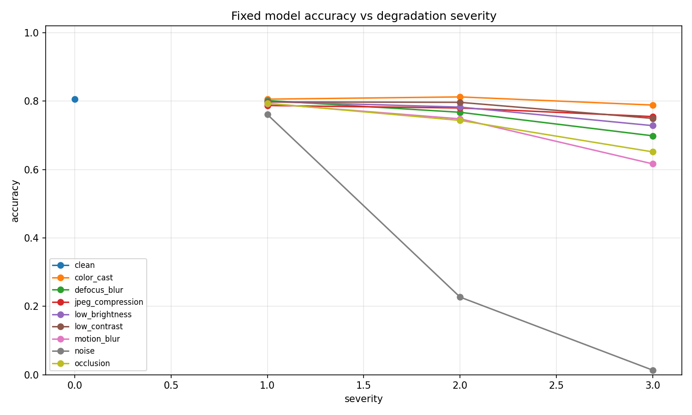
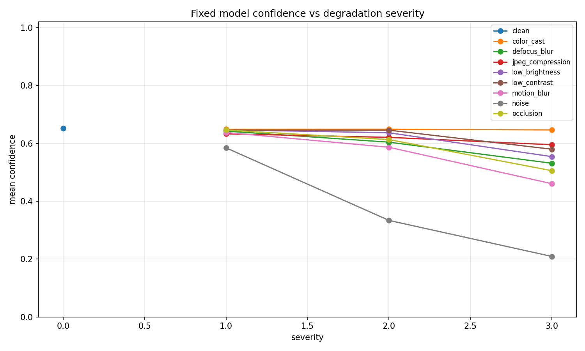
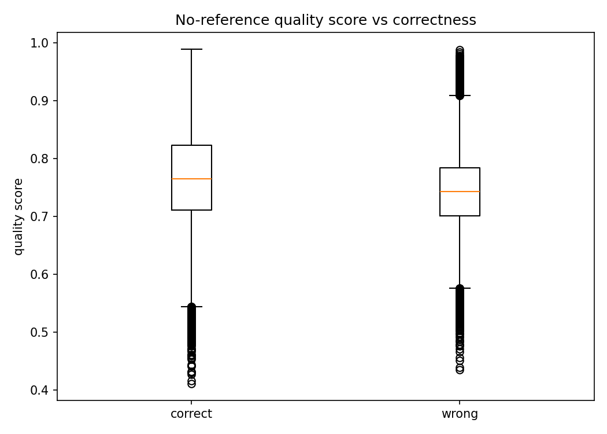

Rows
37800
37800
Images
1512
1512
Overall accuracy
0.712
0.712
Most harmful degradation types
- noise: 0.334 accuracy
- motion_blur: 0.719 accuracy
- occlusion: 0.729 accuracy
- defocus_blur: 0.756 accuracy
- low_brightness: 0.770 accuracy
Results by degradation and severity
| Degradation | Severity | Accuracy | Confidence | Quality score | N |
|---|---|---|---|---|---|
| clean | 0 | 0.806 | 0.652 | 0.783 | 1512 |
| color_cast | 1 | 0.806 | 0.649 | 0.829 | 1512 |
| color_cast | 2 | 0.812 | 0.649 | 0.826 | 1512 |
| color_cast | 3 | 0.788 | 0.646 | 0.847 | 1512 |
| defocus_blur | 1 | 0.802 | 0.642 | 0.736 | 1512 |
| defocus_blur | 2 | 0.767 | 0.604 | 0.702 | 1512 |
| defocus_blur | 3 | 0.698 | 0.531 | 0.680 | 1512 |
| jpeg_compression | 1 | 0.787 | 0.633 | 0.786 | 1512 |
| jpeg_compression | 2 | 0.780 | 0.621 | 0.786 | 1512 |
| jpeg_compression | 3 | 0.755 | 0.595 | 0.783 | 1512 |
| low_brightness | 1 | 0.798 | 0.647 | 0.872 | 1512 |
| low_brightness | 2 | 0.782 | 0.637 | 0.744 | 1512 |
| low_brightness | 3 | 0.728 | 0.554 | 0.629 | 1512 |
| low_contrast | 1 | 0.798 | 0.646 | 0.879 | 1512 |
| low_contrast | 2 | 0.796 | 0.646 | 0.804 | 1512 |
| low_contrast | 3 | 0.749 | 0.580 | 0.722 | 1512 |
| motion_blur | 1 | 0.792 | 0.638 | 0.741 | 1512 |
| motion_blur | 2 | 0.748 | 0.586 | 0.723 | 1512 |
| motion_blur | 3 | 0.616 | 0.461 | 0.711 | 1512 |
| noise | 1 | 0.761 | 0.584 | 0.765 | 1512 |
| noise | 2 | 0.227 | 0.334 | 0.736 | 1512 |
| noise | 3 | 0.013 | 0.209 | 0.714 | 1512 |
| occlusion | 1 | 0.794 | 0.646 | 0.772 | 1512 |
| occlusion | 2 | 0.743 | 0.613 | 0.742 | 1512 |
| occlusion | 3 | 0.651 | 0.506 | 0.697 | 1512 |
Plots

Accuracy drop shows performance robustness.

Confidence shows whether the model knows it is uncertain.

Quality score vs correctness tests if IQA can predict failures.